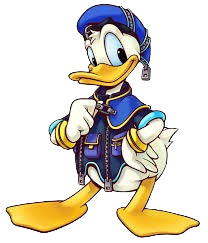
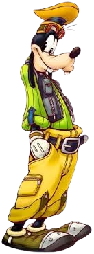
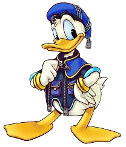
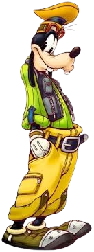
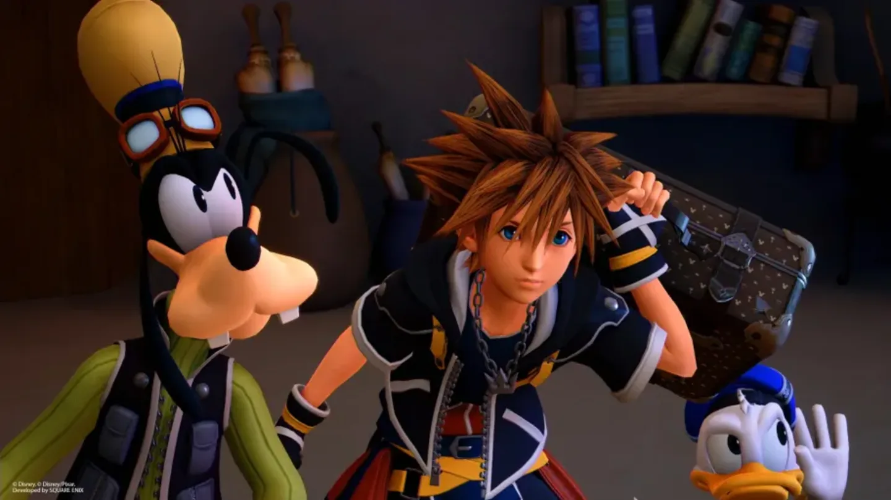
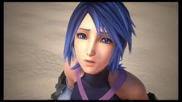
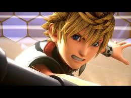
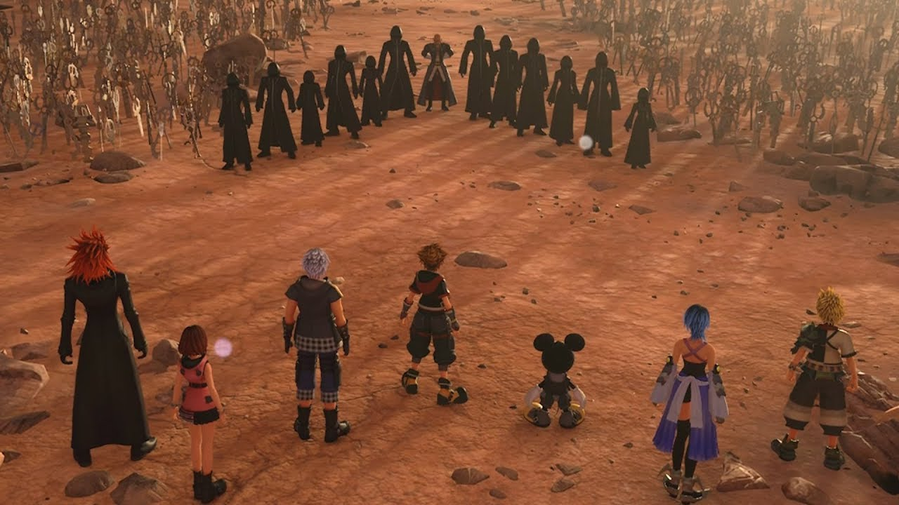
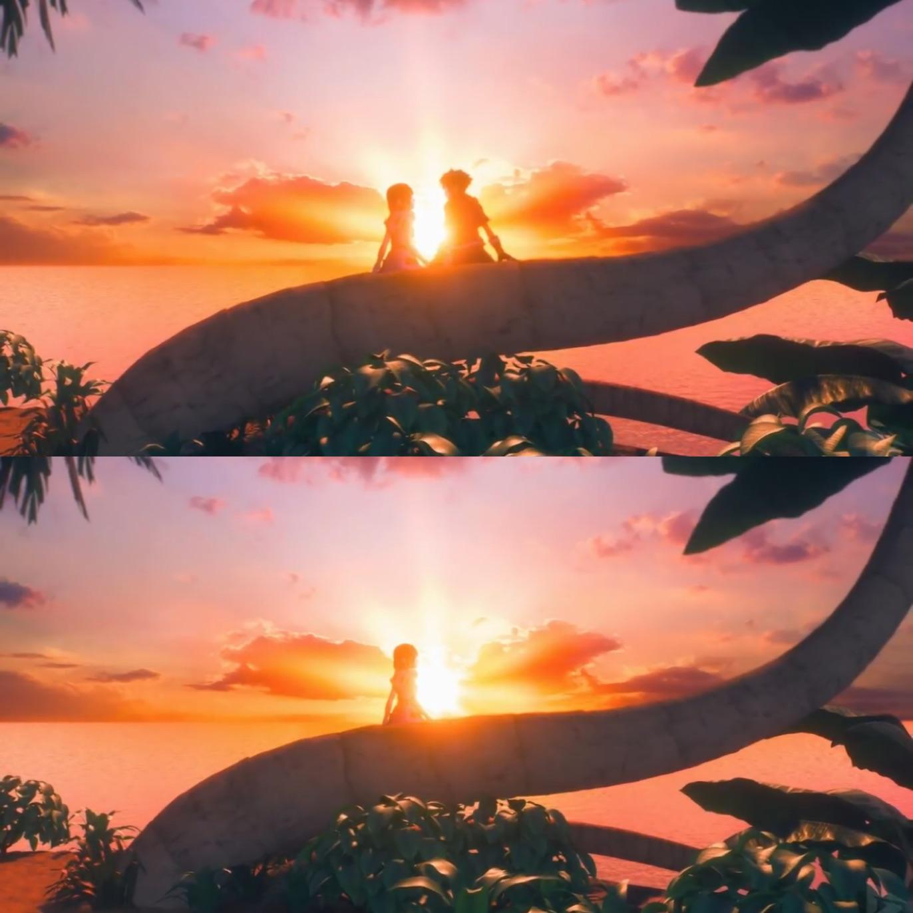

Production for Kingdom Hearts III was announced in 2013. However, halfway through development, Unreal Engine 4 was released, leading Square Enix to restart the project entirely. As a result, the game was finally released in 2019. The penultimate entry in the “Dark Seeker Saga” brings back the main trio, Sora, Donald, and Goofy, as they prepare to face the forces of darkness once more.
_KH3.png) 



The game begins with Sora and his companions at Master Yen Sid’s tower. In the events directly preceding Kingdom Hearts III, Sora participated in an exam to obtain the Power of Waking. During the trial, he was kidnapped by the reformed Organization XIII, who attempted to turn him into a vessel for the saga’s main villain. Although Sora was rescued, he was left severely weakened and lost the Power of Waking in the process.
The Power of Waking is essential for Sora to learn, to bring back the missing members of the Guardians of Light that had been lost long ago. So Sora must travel the worlds once more, in search of the Power of Waking, and regaining his lost strength. As Sora travels the worlds, he meets many new friends and lots of old enemies.

In every world Sora explores, the Organization is present, orchestrating schemes behind the scenes. With the help of their new allies, Sora, Donald, and Goofy work together to prevent the Organization from achieving its goals.

In some worlds they succeed in stopping the Organization, in others, they're not quite sure what the Organization was going for, and don't seem to succeed.

Soon, the group learns from Chip and Dale that they can no longer reach King Mickey and Riku, who are on their own mission. Sora rushes to assist and discovers a path to the Realm of Darkness, where the King and Riku are trapped near the Destiny Islands. Arriving just in time, Sora confronts Aqua, a Keyblade Master who has been lost in the Realm of Darkness since before the first game and has been consumed by its influence.
After she recuperates a bit, she takes them to a place where she hid another Guardian of Light, Ventus, where had been sleeping for all these years. When they try to wake him, a enemy from his past, and Organization member, attacks forcing Aqua to defend. When Aqua looks about to lose, Ven's heart reaches out to Sora, and tells him that he never truly lost the Power of Waking, and Sora finds in himself the ability to return Ven's heart to him, reawaking him in time to help his friend.
Now the Guardians of Light have been finally assembled, it is time to confront the Organization and the man behind it all.
The Organization initially gains the upper hand, forcing Sora to use the Power of Waking in ways it was never meant to be used in order to save his friends and even the odds. This leads to a series of climactic battles in which the heroes defeat every Organization member except the main villain. In the final confrontation, one of the Guardians of Light is struck down, providing the final piece needed to reforge the X-Blade (pronounced Keyblade), a weapon capable of summoning the true Kingdom Hearts, the ultimate source of power and knowledge.

The villain is sent into Kingdom Hearts in an effort to prevent him from engulfing the universe in Darkness, and Sora, Donald, and Goofy follow after him, while the rest of the remaining Guardians of Light stay outside and attempt to seal Kingdom Hearts away once again. Working together, and with the power of friendship, Sora defeats the Villain, and with the X-Blade seals away Kingdom Hearts once again. And then uses the Power of Waking once more to bring back the one they lost, at a great cost.
The game ends with everybody celebrating on Destiny Islands, before showing Sora and Kairi sharing a moment together, before Sora disappears from sight. With the main villain gone, the Dark Seeker Saga ends, but for Sora and Co. the journey continues.